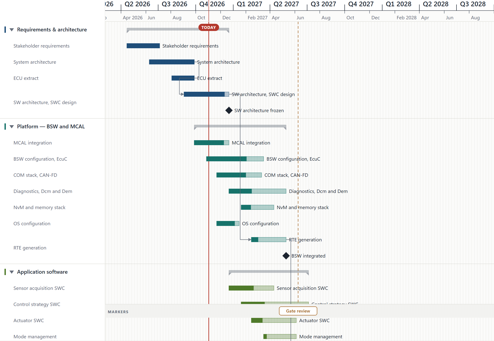
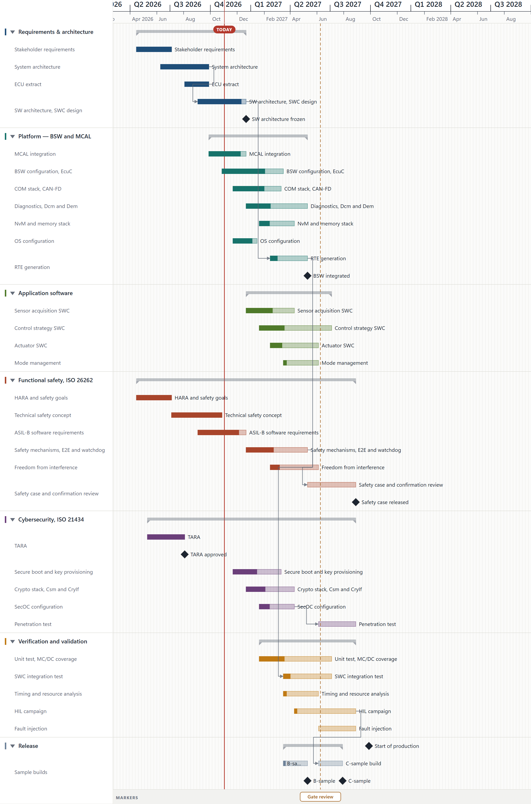
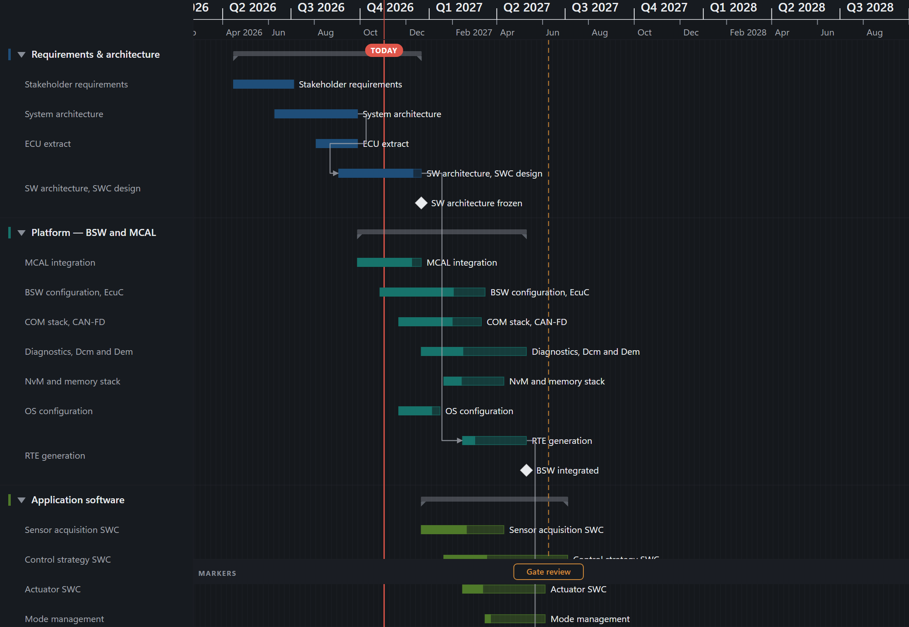
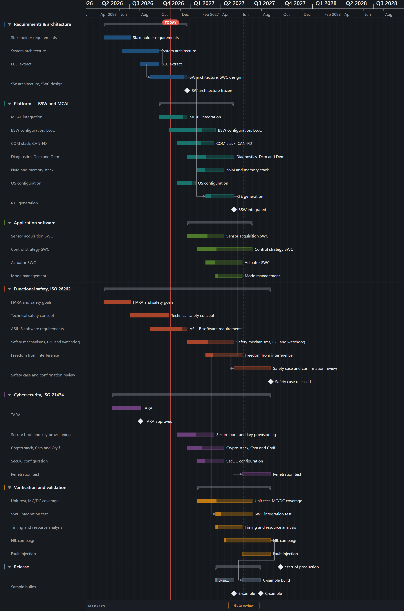

Three ways a plan could be lost, all of them found by testing v2.35.0
after it shipped rather than by a report. Saving a plan that lives in a
.json file destroyed it. One impossible date left the whole
application blank with nothing on screen to say why. And printing a plan
printed the window — the rows below the fold were not cut off at the page
edge, they were never drawn.
finishSave built the single-file HTML application and wrote
it, whatever the handle was — while the loader dispatches on the
extension. So a plan opened from sprint.json came back
after one edit and one Ctrl+S as a 430 KB HTML document still called
sprint.json, and JSON.parse could never read
it again. The original was gone. The autosave of SRS-PERS-037 did the
same thing on a timer, without a keystroke.
Measured in the running app, on the 39-row sample, through the shipped functions:
sprint.json → 440,791 bytes of <!doctype html>
handing those bytes back to the loader → Unexpected token '<'
what it writes now → 13,382 bytes of JSON, 10,051 for YAML
handing those back → reopened 39 rows, 33 tasks
The file picker still offers .html alone, because the
self-contained application is what this product is. The rule applies to
the file the planner already chose: the format follows the name, exactly
as the loader reads it, so a save and an open can never disagree. An
.html control test keeps “never write HTML” from passing
every case and breaking the format the product ships as.
tests/unit/saveFormat.test.ts
isISODate was a shape test and nothing else —
/^\d{4}-\d{2}-\d{2}$/. So 2026-13-45 passed
validation, the file opened, the notice said “Opened wedged.json”, and
the viewport arithmetic went to NaN: no calendar axis at all, no bars,
nothing to click, and no message. The planner is left with a blank
application and no way to learn why.
What the refusal says now, read out of the running app:
| Field | Value | Message |
|---|---|---|
tasks[0].start | 2026-13-45 | tasks[0].start is not a day that exists: 2026-13-45 |
milestones[0].date | 2026-02-30 | milestones[0].date is not a day that exists: 2026-02-30 |
calendar.holidays[0] | 2026-04-31 | calendar.holidays[0] is not a day that exists: 2026-04-31 |
tasks[0].end | 1900-02-29 | tasks[0].end is not a day that exists: 1900-02-29 |
tasks[0].start | 2028-02-29 | accepted — 2028 is a leap year |
The old message named the row index alone, which in a two-hundred-row
plan is not enough to find the field. Month length is arithmetic rather
than Date.UTC, which maps years 0–99 onto 1900–1999 and would
have accepted 0099-02-29. The refusal is also whole: the plan
that was open stays on screen, because a half-loaded document is what
produced the blank chart in the first place.
tests/unit/dateValidation.test.ts, tests/e2e/open-bad-file.spec.ts
The chart is not a scrollable element: the SVG is exactly the size of
the window and the plan moves under it through scrollY. So
window.print() printed the window. The rows below the fold
were not cut off at the page edge — they were never painted, and
nothing said anything was missing. A plan that had been scrolled
printed from wherever it had been left.
Both builds printed to PDF through the same path Ctrl+P takes, at the
default page size. The “before” is the committed
dist-template/ at tag v2.35.0, served on a
second port and actually captured:
| Build | Window | Printed pages | Row names on paper |
|---|---|---|---|
| v2.35.0, shipped | 1440×900 | 1 | 20 of 39 |
| v2.35.0, shipped | 1920×900 | 1 | 20 of 39 |
| this tree | 1440×900 | 2 | 39 of 39 |
| this tree | 1920×900 | 1 | 39 of 39 |


Growing the sheet is not enough on its own. The shell is
100vh with a clipped chart inside it, so a taller SVG is
clipped away again unless every box between the page and the chart may
grow. And the re-render has to be flushed synchronously: the browser lays
the pages out as soon as the beforeprint handler returns, so
an ordinary setState — batched into a later task — would be
applied after the page had already been captured, and the print would be
unchanged.
The calendar axis prints on the first page only. It is painted once at
the top of one tall SVG, inside chart-axis-clip, so a plan
that needs a second page carries bars there with no dates above them,
and the break falls wherever it falls inside a row. Repeating the
header per page means emitting one SVG per page rather than one tall
one — a larger change than this slice, and in the backlog rather
than quietly left out of the requirement.
MARKERS foot band → at 1,643px, below the last row at 1,632, instead of pinned mid-sheet
tests/e2e/print-pagination.spec.ts
Captured from the same two servers with prefers-color-scheme:
dark, so the comparison is the build and not the theme.


Every fix above was green — typecheck, lint, 501 unit tests and the whole Playwright suite — before any of it had been read by anything other than whoever wrote it. Four reviewers then took one dimension each, and every finding they raised was handed to a separate agent whose instructions were to refute it. Twelve findings, six survived. Three of those six were in the new tests.
| What survived refutation | Where |
|---|---|
| The updater overwrites the bound file through a second write path, chosen on write permission alone — so the same loss survived behind Settings → Update, and the reload afterwards re-served the old version, because the page being served is not the data file | updateChecker.ts |
formatForName answered html for a name with no extension or an unknown one, while the loader reads that class by trying JSON then YAML — leaving exactly the old loss in place for it | fileIo.ts |
max-width: 100% on a viewBox-less SVG shrinks the box while the content stays at 1:1, and svg:root clips the rest — so the print fix printed less than before | global.css |
expect(shellOverflow).not.toBe('hidden') had no failing state: .app-shell declares no overflow outside the print block | the print spec |
expect(got).toBeNull() read a value the test itself had written in both branches | the date spec |
| The restore test passed whether or not printing had ever grown the sheet | the print spec |
The third is the one worth dwelling on. The print fix had been measured, and the measurement said three pages with every row name on paper — taken at A4 landscape, where a 1122px page happens to be wide enough that the clipping does not bite. At the page size a planner actually gets, the same build printed 23 of 39 rows from a 1440px window and 16 of 39 from 1920px, the right of the timeline cut off in both. A right answer from a lucky instrument is still a wrong measurement.
max-width: 100% and no viewBox → 23/39 at 1440px, 16/39 at 1920px
dropping the rule → 39/39, but the timeline clipped at 1920px
a viewBox, applied only while printing → 39/39 and the full span, at every width tried
Each of the five new tests written for these fixes was then run against the code with its fix reverted, and each went red carrying the message it was written to carry, while the controls beside them stayed green. The six refuted findings are recorded too: two rested on the agent bridge, which is compiled out of the product, and two attributed pre-existing behaviour to this change on a before-state that does not hold.
Real numbers, including the failures and the mistakes. Every “before”
here was captured from the committed build at tag v2.35.0,
served on a second port — not illustrated, not remembered.
| Gate | Result |
|---|---|
tsc --noEmit | clean |
npm run lint | 0 errors, 18 warnings (the pre-existing baseline, unchanged) |
npm test | 512 passed, 0 failed, across 63 files — 36 of those tests new here |
npm run test:e2e, the three new specs | 24 of 24, on all three projects (desktop, iPad/WebKit, iPhone/WebKit) |
npm run test:e2e, whole suite | 326 passed, 2 failed, 239 skipped, across 567 tests and three projects — both failures pre-existing, re-measured below |
npm run build:template | index.html, 429.43 kB (gzip 127.58 kB) — up 1.83 kB on v2.35.0 |
| the portable build, opened from the filesystem | v2.35.1, 33 bars, 39 rows, console clean; printing it puts 39 of 39 rows on the sheet |
| save → delete a bar → reopen, in the built app | .json and .yaml both 33 → 32 → 33 |
The two failures. Neither is in code this slice changed.
dependency-arrows on tablet timed out waiting for Delete
dependency in the command bar, and owner-round on mobile
committed a drag 2.97px from its preview against a 2px tolerance. Both
specs were then repeated five times: 155 runs, 3 failures, all three in
the tablet connector-selection tests and none in the drag. So the tablet
dependency flake is nearer 3 in 15 than the “once in
fifty” the v2.35.0 showcase recorded — that backlog entry is
wrong, not merely open. The suite also force-killed four workers at
teardown after the 300s stop timeout.
Three of my own test instruments were wrong before they were right, and
each was caught by a control rather than by inspection. A dispatched
WheelEvent aimed at .chart-area never reached
the listener on the SVG below it, and the test said so instead of passing
— “the wheel did not scroll the plan, so this test is not measuring
anything”. An axis check used .axis-major, a class this app
does not have, and read 0 both before and after. And
page.mouse.wheel is unimplemented in mobile WebKit, which is
two of the three projects. The first full suite run of this slice was also
discarded rather than reported: a source file was edited while it was in
flight, which hot-reloads every page under test. The clean run then failed
twice, correctly — save-roundtrip has a staleness guard, and
dist-template/ still predated the source changes. Rebuilding
it, which the release requires anyway, turned both green. The run also
force-killed four workers at teardown after the 300s stop timeout; that is
the same teardown problem, and it is in the backlog rather than explained
away.
One thing recorded in the v2.35.0 showcase is now fixed rather than
merely explained: the suite’s five-to-ten-minute teardown. Playwright
holds the config’s webServer for the whole run and waits on
it at the end — 20 runs of one spec took 19.3s without the block and
10.3m with it. PP_NO_WEBSERVER=1 now skips it for a local
run against a server you started yourself; CI still owns its own.